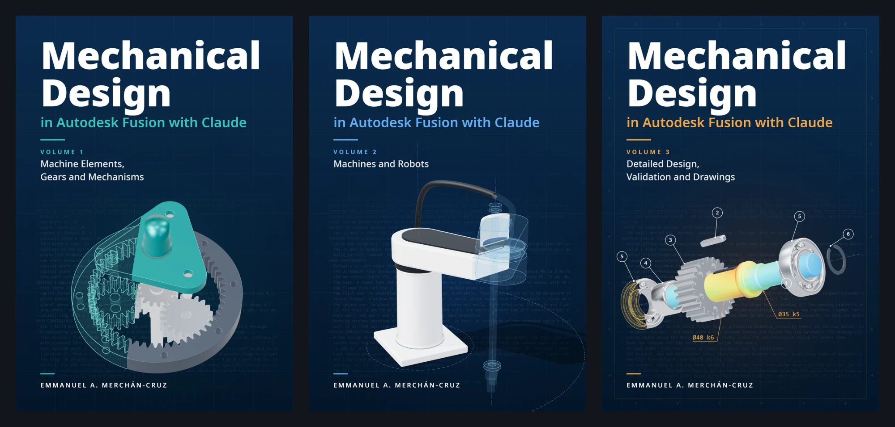

RobotHack '26 · Master class
What we built with a language model and Autodesk Fusion, and what you have to know to do it.
Prof. Emmanuel A. Merchán-Cruz
Transport and Telecommunication Institute, Riga
Part 1 · The result
Each one is a script for Fusion's programming interface, written from a prompt of five parts, then built, moved and measured by Fusion.
K pause J L 5 s R again

Part 2 · The machine that predicts words
A language model continues text: given the words so far, it predicts the next one, again and again. It has read about gears in books and forum posts. It has never seen a gear, and it does not measure anything.
It is written in every textbook: d = m z.
Each answer came with a confident reason: "rigid solids cannot overlap".
Fusion intersects the two bodies and weighs what is left.
Part 3 · A bad prompt
It sounded right, it built, and the check passed. Only someone who knows gears sees that it is not a gear.
K pause J L 5 s R again
Part 4 · The theory behind the prompt · the first habit
Before Fusion builds anything, write down what it must give. If the numbers disagree, one of you is wrong, and you will find out which.
Build a gear pair with 20 and 40 teeth.
Turn the small gear a quarter turn.
Part 4 · How a tooth is made
Wind a string round a disc, the base circle, and unwind it, keeping it tight. Its end draws a curve called the involute. Every flank of these teeth is that curve. Two involute flanks push each other along one straight line, so the speed ratio stays exactly constant.
Nobody draws involutes in a factory. A cutter with straight sides at 20° rolls along the pitch circle and cuts away everything it passes through. The curve comes out of the rolling. This gear was cut the same way, here, in the browser.
With too few teeth, the cutter's tip swings into the foot of the tooth and cuts it away: undercut. The tooth is weak where it should be strongest.
Now build the same pair with a small gear of 12 teeth.
Drag, or + − to change the teeth
Part 4 · Who says no
The gears are linked: turn one and Fusion turns the other by the ratio. Switch the link off and turn the small gear alone. Half a tooth of a 20-tooth gear is 360 / 20 / 2 = 9°. The teeth run into each other.
This sheet cuts its own gears with its own cutter and counts the overlap, degree by degree. At 9°: about 180 mm³.
Fusion intersects its real solids. Its number is a measurement, and the model cannot argue with it.
The book's check does the same on every script it tests, and so does a control: remove the line that turns gear 2 by half a tooth, and the check must fail. It did: 186.4 mm³.
Turn only the small gear by half a tooth, without the big one. Then ask Fusion if the parts collide.
Part 5 · The good prompt
Not "make me a gear". A specification in five parts, with the answers fixed before the run. This is the gear-pair prompt of Mechanical Design in Autodesk Fusion with Claude.
module m, 2 · teeth z1, 20 · teeth z2, 40 · pressure angle α, 20° · face width, 10 · backlash, 0.2
centre distance a = m·(z1 + z2) / 2 · fewest teeth zmin = 2 / sin²α, rounded up
z1 and z2 at least zmin, 18 at 20°: refuse with a message · gear 2 turned so a tooth sits in a gap
As-built joints, not joints · a motion link: gear 1 turns gear 2 by z1/z2, the other way
90° on gear 1 turns gear 2 by 45° · at rest, no interference · z2 = 50 gives 70 mm · z1 = 12 is refused
Part 5 · The good prompt, judged
The five-part prompt you just read and the book's notes on Fusion's API, given to Claude Sonnet on 23 November. Nothing else: it could not read a file or run a line.
The first run's two faults are about names the prompt never gave. A judge can only measure what the prompt names.
Part 5 · The loop
The same prompt, and one more permission: run the book's check on its own script, read what failed, correct it. Eight runs at most.
| Run | Fusion's check said |
|---|---|
| 1 | 7 ok · gear 2's shaft at x = 0 |
| 2 | 8 ok · two bodies share 502.7 mm³ |
| 3 | 3 ok · a wrong type in Fusion's API |
| 4 to 8 | 9 ok · then the joint it looks for is not there |
Part 5 · Two more lines
| Run | Fusion's check said |
|---|---|
| 1 | 7 ok · a wrong type for the motion link |
| 2 | 20 ok · the shaft inside the gear, 502.7 mm³ |
| 3, 4 | 22 ok · the message must say "= 70.00 mm" |
| 5 | 23 of 23 · ALL PASS · 22 min 20 s |
K pause J L 5 s R again
Scaling up · Volume 1, chapter 15
Hold the ring, drive the sun: the planets roll inside the ring and carry the carrier round. How slowly is a matter of counting teeth.
Build a planetary gearbox with four planets.
Turn the sun gear one full turn.
Scaling up · Volume 2, chapter 39
The tool must tilt and roll. Hanging a motor on each joint makes the arm heavy. This wrist keeps both motors on the frame and lets three bevel gears share their work: a differential.
89 parts in 7 groups, as Fusion built them from the book's script: the frame, the carrier, two input drives, the roll output, two motors with their belts.
Both motors turn the same way: the side gears turn together and carry the whole carrier round. The wrist tilts. The belts are 2 to 1, so the motors turn twice as far.
Motors turn opposite ways: the side gears turn against each other, the carrier stays, and the output gear between them spins. The wrist rolls. Together: tilt and roll at once.
Build the robot wrist.
Tilt the wrist by 30 degrees, roll it by 45, and check that nothing collides.
Part 6 · Honest numbers
Found while preparing this class, on this computer, between 21 and 23 November 2026. Each one is a reason to measure, not to trust.
| No. | Observed | Measured | Done about it |
|---|---|---|---|
| 1 | The model guessed a measurement | "0 mm³" three times; Fusion: 173.1 mm³ | It measures through Fusion, never guesses |
| 2 | Written blind, one try is luck | The good gear prompt, twice, no running allowed: two different failures, a part at x = 0, then a Fusion error before gear 2 existed | Let it run the check and fix: 23 of 23 on the fifth run |
| 3 | "Built" is not "right" | "60 mm centre distance", said Claude; Fusion measured the design 1,560 mm across | Acceptance in the prompt, checked by Fusion |
| 4 | It retold a refusal wrongly | The script: "below 18 teeth at 20 degrees". The model: "below 20 degrees" | Rule: quote a refusal word for word |
| 5 | Fusion went silent | After about 370 requests it ran scripts and returned nothing; once on 23 November in the middle of a run | A fresh Fusion before the talk |
| 6 | My own tool cut the prompt | Windows passed only the first line of a 29-line prompt; the model built something else from it | Send prompts as input, not as a command line |
Take this home
| You wrote | What came back, 23 November | Write instead |
|---|---|---|
| A wish: "make me a gear pair" | It chose module 2.5 for you and put the centres 75.5 mm apart, where m·(z1 + z2) / 2 gives 75.0; no plate, no shafts, no joints, so nothing turns; 753.2 g of steel | Inputs: every number, and the material |
| The sizes, nothing else | "60 mm centre distance", said Claude. Fusion: the design is 1,560 mm across. Millimetres where the API wants centimetres | Conventions: "the API works in cm and radians: convert every input" |
| 12 teeth, said in passing | No teeth at all, and 12 not refused | Hard constraints: involute flanks from the base circle; refuse fewer than 2 / sin²α, 18 at 20° |
| Positions left to the model | A centre distance it chose itself | Derived: the centre distance a = m·(z1 + z2) / 2, worked out in the script, never typed |
| A check that only looks for clashes | It passed a gear pair with no teeth | Acceptance: drive gear 1 by 90°, gear 2 must turn 45° back; no collision while turning |
| The names the judge needs, unsaid | 8 checks passed, then a part at x = 0 and a joint it could not find | Name the parts and joints the check will measure |
And the sixth line of every prompt: tell me every decision you made that I did not ask for.
Take it home · one prompt, a whole robot
Claude wrote 622 lines; the check failed once on a material name; then 12 of 12: 68 parts, 20 screws, 14 nuts, 435 g.
K pause J L 5 s R again
Thank you
Know the theory. Write the five parts. Predict the numbers. Let Fusion judge.
Prof. Emmanuel A. Merchán-Cruz
Transport and Telecommunication Institute, Riga